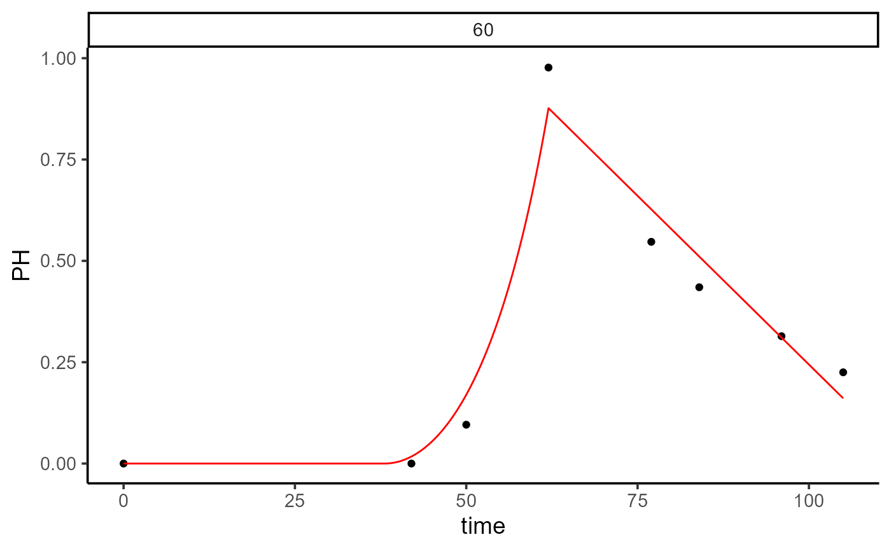
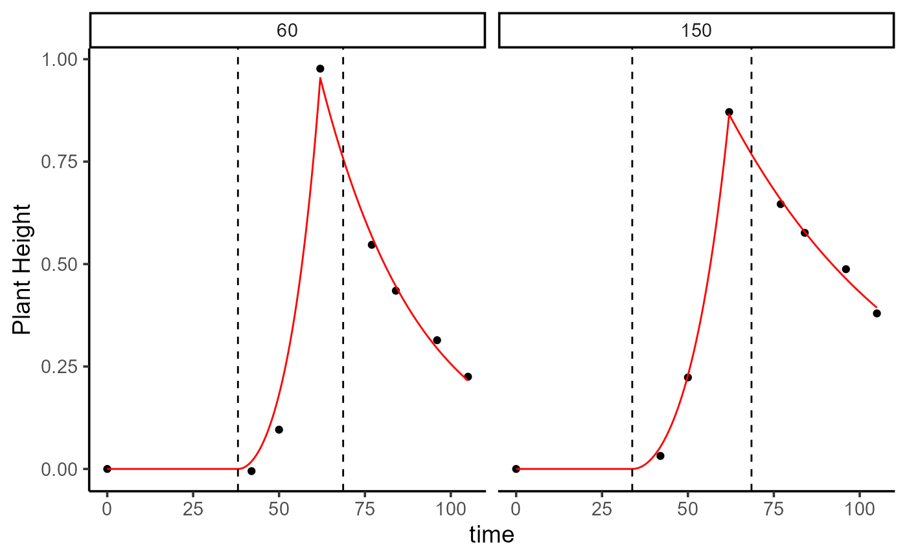

Plant Height Modelling
Usage
height_HTP(
x,
height = "PH",
canopy = "Canopy",
plot_id = NULL,
fn = c("fn_exp1_exp", "fn_exp1_lin", "fn_exp2_exp", "fn_exp2_lin"),
...
)Arguments
- x
An object of class
read_HTP, containing the results of theread_HTP()function.- height
A string specifying the plant height trait to be modeled. Default is
"PH".- canopy
A string specifying the canopy trait to be modeled. Default is
"Canopy".- plot_id
An optional vector of plot IDs to filter the data. Default is
NULL, meaning all plots are used.- fn
One of the following options: "fn_exp1_exp", "fn_exp1_lin", "fn_exp2_exp", "fn_exp2_lin".
- ...
Additional arguments passed to the
modeler_HTP()function.
Value
An object of class modeler_HTP, which is a list containing the following elements:
paramA data frame containing the optimized parameters and related information.
dtA data frame with data used.
fnThe call used to calculate the AUC.
max_timeMaximum time value used for calculating the AUC.
Examples
library(exploreHTP)
data(dt_chips)
results <- read_HTP(
data = dt_chips,
genotype = "Gen",
time = "DAP",
plot = "Plot",
traits = c("Canopy", "PH"),
row = "Row",
range = "Range"
)
ph_1 <- height_HTP(
x = results,
height = "PH",
canopy = "Canopy",
plot_id = 60,
fn = "fn_exp2_lin"
)
print(ph_1)
#> Call:
#> fn_exp2_lin(time, t1, t2, alpha, beta)
#>
#> Sum of Squares Error:
#> Min. 1st Qu. Median Mean 3rd Qu. Max.
#> 0.03205 0.03205 0.03205 0.03205 0.03205 0.03205
#>
#> Optimization Results `head()`:
#> plot genotype t2 alpha beta sse t1 auc
#> 60 W19026-15 62 0.0011 -0.0166 0.032 38 28.5
#>
#> Metrics:
#> Plots Timing Convergence Iterations
#> 1 0.28 (min) 100% 1054 (plot)
plot(x = ph_1, plot_id = 60)

ph_2 <- height_HTP(
x = results,
height = "PH",
canopy = "Canopy",
plot_id = 60,
fn = "fn_exp2_exp"
)
plot(x = ph_2, plot_id = 60)

print(ph_2)
#> Call:
#> fn_exp2_exp(time, t1, t2, alpha, beta)
#>
#> Sum of Squares Error:
#> Min. 1st Qu. Median Mean 3rd Qu. Max.
#> 0.009253 0.009253 0.009253 0.009253 0.009253 0.009253
#>
#> Optimization Results `head()`:
#> plot genotype t2 alpha beta sse t1 auc
#> 60 W19026-15 62 0.00117 -0.0346 0.00925 38 28
#>
#> Metrics:
#> Plots Timing Convergence Iterations
#> 1 0.16 (min) 100% 1071 (plot)